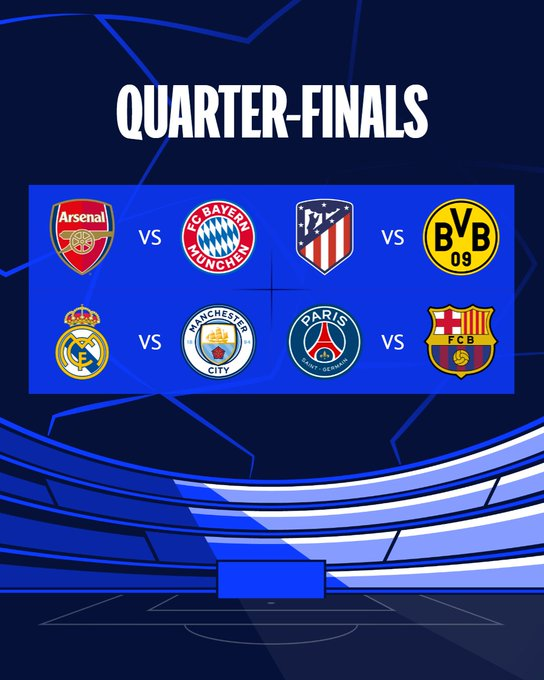

|  |
Quartas de finai definidas com direito a "final antecipada"
Estão definidos os
confrontos das quartas de final da UEFA Champions League
2023/24. Nesta sexta-feira (15), foi realizado o sorteio dos jogos, além da definição
do chaveamento completo
até a final, que será no dia 1º de junho, no estádio de
Wembley.
O destaque ficou com o confronto entre Real Madrid e Manchester
City, reeditando a semifinal da temporada passada, quando Pep Guardiola e
companhia
bateram o time de Carlo Ancelotti para chegar a final e conquistar
a taça pela primeira vez. Além disso, o El Clássico, entre Real e Barcelona, só
poderá acontecer em
uma eventual decisão
Os duelos de ida das quartas de final da Champions League estão marcados
para os dias 9 e 10 de abril, enquanto os de volta serão na semana seguinte,
nos
dias 16 e 17.
|